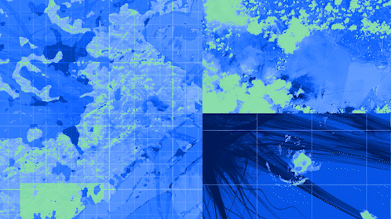

Imagery NASA Blue Marble · model output NASA / IBM
← Back to the systemScroll · Earth splits into the six HLS bands
Prithvi EO is the NASA–IBM geospatial foundation model, pretrained on the Harmonized Landsat–Sentinel archive — petabytes of multispectral, multi-temporal imagery of every corner of Earth — and generalized across downstream tasks: floods, burn scars, crops, land cover.
Prithvi EO 2.0 scales the recipe to 600M parameters with temporal and location embeddings. AGU 2025 Open Science Award.

Harmonized Landsat–Sentinel delivers blue, green, red, near-infrared and two shortwave-infrared bands at 30 m, revisiting each scene every two to three days. Prithvi reads a stack of dates at once, so a flood or a burn is a change in time, not just a pattern in space.
Masked-autoencoder pretraining on multi-temporal tiles: hide three quarters of Earth and learn to put it back. One frozen encoder, many lightweight task heads.
Band views on the platform are rendered from the Blue Marble composite over the Indus basin — the flood-mapping evaluation region.
Prithvi WxC is the weather and climate foundation model: 2.3B parameters trained on four decades of MERRA-2 reanalysis, forecasting up to 160 atmospheric variables. Rollout happens in latent space; neural-operator blocks respect the PDE structure of atmospheric flow.
One pretrained backbone serves forecasting, downscaling and parameterization.
The flow on the platform is the idea, not the data: jets streaming around a graticule. The screen shows the model's own output.
Multi-sensor super-resolution (ICCV Workshops 2025), Clifford neural operators for atmospheric PDEs and the WINDSET suite (ICLR 2024) round out the Earth work.